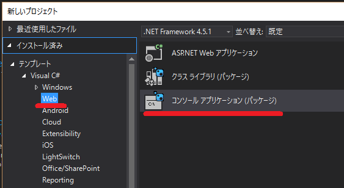
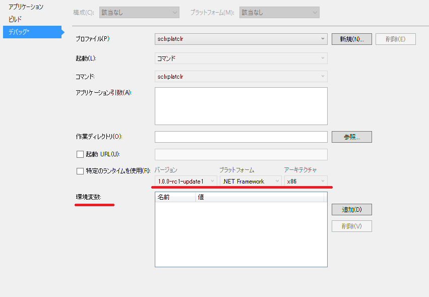

Azure Storage Client Library をDNXで使ってみた
Microsoft Azure Advent Calendar 2015 2日目
.NET 用のAzure Storage Client Libraryが、 6.1.1-preview (2015/10/30リリース) から DNXCore 5.0 にも対応しているので、どれぐらい動くのか簡単なコンソールアプリケーションを作ってみた。 ソースgithub.com/takekazuomi/scldnx-sample

環境
コードは、 Visual Studio 2015 Update 1 で書いて、dnx 関連のコマンドでコンパイル実行という流れ。最近なんやら、dotnetというコマンドも有るらしいが今回は使っていない。新規プロジェクトで、C# -> Web の下の、コンソールアプリケーション(パッケージ）というのを選択。（どうしてWebの下なのかさっぱり分からない）
これで、見慣れぬ構造でプロジェクトが出来る。ソリューションのフォルダーには、sln のファイルと一緒に global.json が出来、プロジェクト本体は、src/[プロジェクト名] の下に作成される。プロジェクトファイルは、project.json とJSONのファイルになっている。（コメント書けないのでJSONは止めて欲しい）
dnxは、最新の実行環境を使うことにした。今のところ、stable とか release に拘ってもあまり意味ないほどころころとよく変わっている。dnvm コマンドのインストール方法はプラットフォーム毎に違うが、その後はかなり同じような感じで使える。
$ dnvm upgrade -a x86 -r coreclr -u
dnvm upgrade で入れると、alias default が定義され PATHも切られる。dnvm installと、dnvm useを使って方が良いかもしれない。入っているかを、dnvm list で確認する。最後の行が active になっている。
$ dnvm list
Active Version Runtime Architecture OperatingSystem Alias
------ ------- ------- ------------ --------------- -----
1.0.0-beta5 clr x64 win
1.0.0-beta5 clr x86 win
1.0.0-beta5 coreclr x64 win
1.0.0-beta5 coreclr x86 win
1.0.0-beta7 clr x86 win
1.0.0-beta7 coreclr x86 win
1.0.0-beta8 clr x64 win clr
1.0.0-beta8 clr x86 win
1.0.0-beta8 coreclr x64 win coreclr
1.0.0-beta8 coreclr x86 win
1.0.0-rc1-15838 clr x86 win
1.0.0-rc1-15838 coreclr x86 win
1.0.0-rc1-15904 clr x86 win
1.0.0-rc1-15904 coreclr x86 win
1.0.0-rc1-update1 clr x64 win
1.0.0-rc1-update1 clr x86 win
1.0.0-rc1-update1 coreclr x64 win
1.0.0-rc1-update1 coreclr x86 win
1.0.0-rc2-16249 clr x86 win
* 1.0.0-rc2-16249 coreclr x86 win default
このあたりは、ASP.NET 5 の アドベントカレンダー のネタなので軽く飛ばします。[1]
コードの概要
基本的に、Azure Storage Client コード部分はほとんど従来の物と変わらない。
テーブルのリストを取る部分は、こんな感じ。
TableContinuationToken token = null;
do
{
var result = await _tableClient.ListTablesSegmentedAsync(null, null, token, null, null, cancellationToken);
result.Results.ToList().ForEach(table => Console.WriteLine($"{table.Name}"));
token = result.ContinuationToken;
} while (token != null);
ちょっと困ったのは、Table のQueryが Fluent Mode しかサポートしていなくて IQueryable Mode が使えないこと。[2]試しに、WADのPerformanceカウンターを保存しているテーブルを操作するコードを書たら下記のようになった。フィルターの部分が少々煩雑だ。
public async Task RunAsync(CancellationToken cancellationToken)
{
var sw = Stopwatch.StartNew();
var min = _fromDate.ToUniversalTime().Ticks;
var max = _toDate.ToUniversalTime().Ticks;
var table = _tableClient.GetTableReference("WADPerformanceCountersTable");
var query = new TableQuery<WADPerformanceCountersTable>()
.Where(TableQuery.CombineFilters(
TableQuery.GenerateFilterCondition("PartitionKey", QueryComparisons.GreaterThanOrEqual, min.ToString("d19")),
TableOperators.And,
TableQuery.GenerateFilterCondition("PartitionKey", QueryComparisons.LessThan, max.ToString("d19"))));
var result = new List<WADPerformanceCountersTable>();
TableContinuationToken token = null;
do
{
var segment = await table.ExecuteQuerySegmentedAsync(query, token, null, null, cancellationToken);
token = segment.ContinuationToken;
result.AddRange(segment.Results);
// Console.Write($"{segment.Results.Count}.");
} while (token != null);
Console.WriteLine();
sw.Stop();
Console.WriteLine("Count:{0}, Min: {1}, Max: {2}, Elapsed: {3:F2} sec",
result.Count, result.Min(e => e.PartitionKey), result.Max(e => e.PartitionKey), (sw.ElapsedMilliseconds / 1000.0));
}
余談だが、WAD(Windows Azure Diagonestics )のテーブルは、tickを”d19”で書式化したもので、パーテーションを指定すると時系列で絞り込むことができる。この方法は、パーテーションのレンジクリーになるので、時間的なパフォーマンスがあまり良くないが、パッチなどで使うならば結果のデータ量を絞り込めるという利点がある。時間的なコストが重要なシナリオでは、並列化を検討すると良い。
動かしてみる
Storageの接続文字列は、環境変数 AZURE_STORAGE_CONNECTION_STRING から拾うようにした。VSから実行するときは、プロジェクトのプロパティでデバックを選択し環境変数を設定する。デバック時に環境変数を設定出来るのは非常に便利、Visual Studio では今ままで無かったのが不思議なぐらい。ランタイムも選択できるが、dnvm install などで予め入れておく必要がある。
コマンドラインの場合は、下記のようにビルドして実行する。シェルの違いなどで若干違うが、ほとんど同じような感じで実行できる。便利である。
- Windows 10 TH2
$ $env:AZURE_STORAGE_CONNECTION_STRING="Azure Storage Key"
$ dnu restore
$ dnu build
$ cd bin\output\approot
$ .\sclxplatclr.cmd ListTable
- Mac OSX 10.11.1
$ export AZURE_STORAGE_CONNECTION_STRING="Azure Storage Key"
$ dnu restore
$ dnu build
$ cd bin/output/approot
$ ./sclxplatclr.cmd ListTable
実行しているのはテーブルのリストを取ってるだけの簡単なコードなので、結果は省略
最後に
結局、ubuntu 15.04 でやったのは下記のようになって動かなかった。[3]
$ dnu restore
failed to locate libcoreclr with error libunwind-x86_64.so.8: cannot open shared object file: No such file or directory
言語は同じC#でも、ライブラリ回りで細かい違いがあってなかなかコーディングの手間がかかる。今回だと、MEFを使おうかと思ったら dnxcore50 に対応してなくて、Microsoft.Framework.DependencyInjectionを使ってみたり、Environment.CurrentDirectory()が、dnxcore50 に無かったり、カレントのAppDomain取ろうとしたら出来なかったり[4]などなど。
でもまあ、単独のバイナリに変換されるようになると、クロスプラットフォームなコンソールツールを作成する手段として重宝するんじゃないかなとは思った。
| [1] | DNX環境のセットアップ、Installing ASP.NET 5 On Mac OS X、Installing ASP.NET 5 On Linux |
| [2] | Fluent Mode と IQueryable Mode については、Announcing Storage Client Library 2.1 RTM & CTP for Windows Phoneの Conceptual model の部分が詳しい。 |
| [3] | Installing .NET Core on Linuxでは、Ubuntu 14.04 TLS を使っている。RTMではなるべく14.04以降など広いバージョンのUbuntuをサポートして欲しいところ。 |
| [4] | Assembly.GetExecutingAssembly, AppDomain.CurrentDomain and similar |